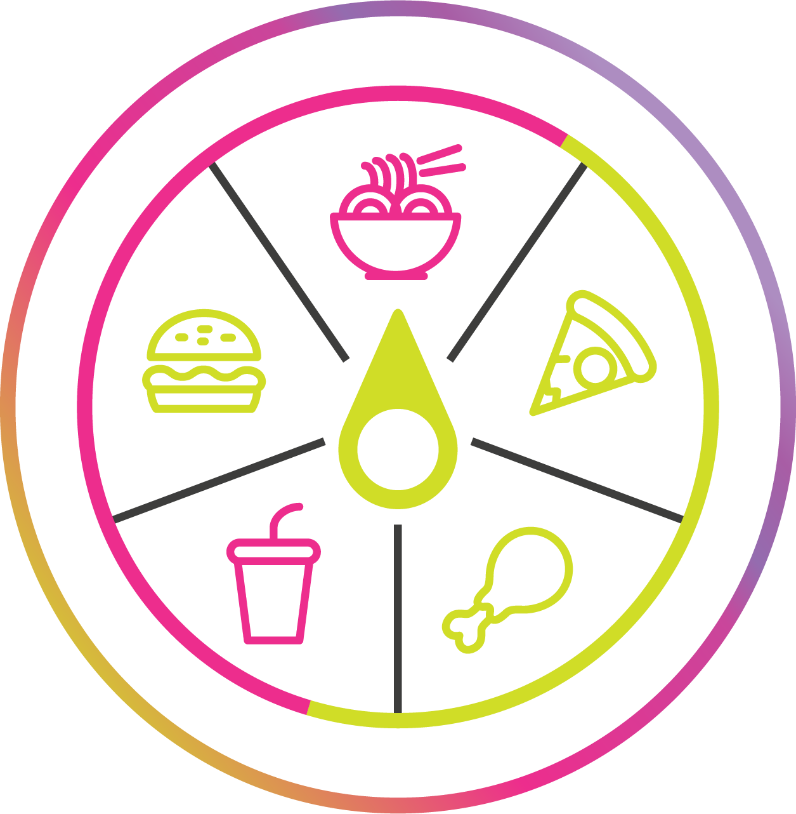
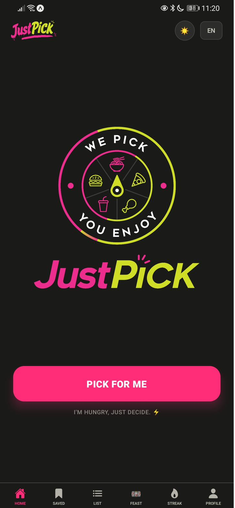
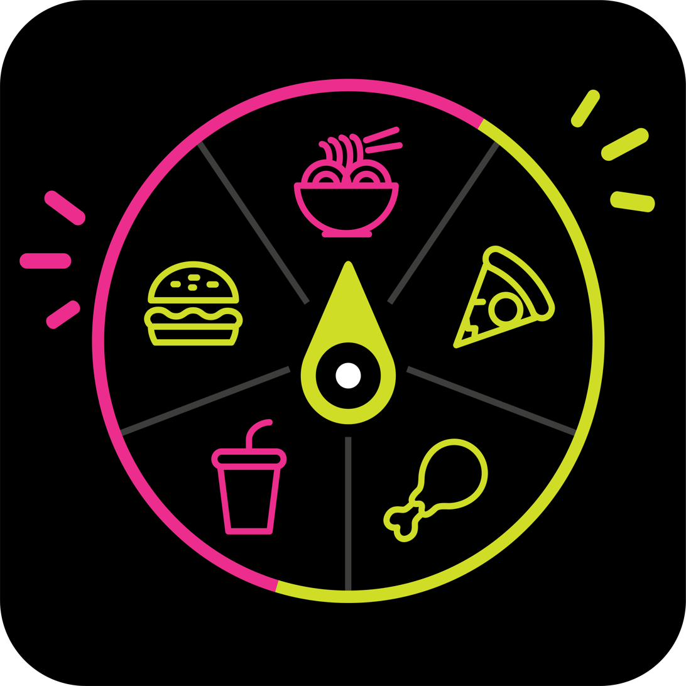

Nobody in your house has to decide what's for dinner again.
JustPICK is the app that just picks. Tell it what's around, it hands you one real answer — a recipe or a restaurant. No scrolling, no group chat, no "idk, whatever."
Free during beta · iOS & Android


This isn't a food problem. It's a decision problem.
There's nothing wrong with your fridge or the restaurants near you. The problem is making one more decision after a full day of making decisions.
JustPICK ends the conversation in one tap.
Five ways to stop deciding
Every feature exists to remove a choice, not add one.
Cook at Home
Tell it what's in your fridge and how much effort you've got left. It generates a real recipe you can actually make tonight.
Eat Out
Nearby restaurants, matched to your mood and cravings — not a wall of stars and photos to scroll through.
Feast Mode
Hosting? Set the headcount and cuisine, and JustPICK builds the whole spread and does the portion math for you.
Indecisive Friends
Can't agree with the group? Spin it. Whatever it lands on is dinner — no more group chat purgatory.
Cooking Streak
A simple photo check-in every time you actually cook, so you can watch the streak build instead of watching it break.
How it works
Three steps, every time. No account setup marathon.
Tell it the basics
What's around, how many people, how much time or patience you've got.
It picks
One real recommendation — a recipe or a restaurant. Not a list to weigh up.
You eat
Save it, cook it, order it. Streak keeps count so tomorrow's an easier yes.
Built by one mom, in public, bugs included
No engineering background, no funding round — just a real "what's for dinner" problem and a lot of evenings spent learning to build software with AI. The wins, the broken buttons, and the redesigns all get posted, not just the polished parts.

"The goal isn't 100 beta users by next month. It's a product real families actually keep using — even if that takes longer to get right."
Stop deciding. Start eating.
JustPICK is free to use during the beta on iOS and Android. Get in now while every feature is unlocked.